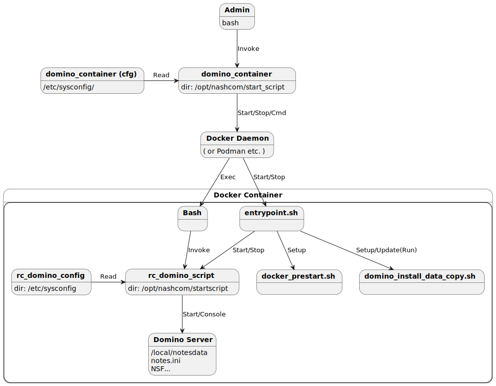

Quickstart
The default configuration should work for most environments.
For special requirements check the documentation for details.
Ensure you have a supported build environment¶
The project supports most Unix base environments including Windows Subsystem for Linux 2 WSL2
For details check supported run-time and build environments
Clone this project via Git¶
Install Git software¶
Git is a very simple and convenient way to download from GitHub. The install command depends on the platform (SUSE: zypper, Ubuntu: apt). "yum" works for any Redhat/CentOS based distribution.
yum install git -y
Create new main directory for the project¶
Create a directory where to download Git projects and switch to it.
Example:
mkdir -p /local/github
cd /local/github
Clone the repository and switch to the directory¶
git clone https://github.com/HCL-TECH-SOFTWARE/domino-container.git
cd domino-container
Download software from Flexnet¶
Before starting the build process, the required HCL web-kits have to be available on the build machine or a remote download location - if configured.
See howto download software for details downloading software from Flexnet.
Build the image¶
./build domino
Run container Domino Container Script¶
The Nash!Com Domino container script allows you to operate your server. It supports Docker and Podman run-time environments.
Install Domino Container script¶
../start_script/install_domino_container
Configure your container¶
The project provides a default configuration. Usually the default configuration should work for your environment. You might want to change the container name and other detailed settings.
domino_container cfg
Note: The container script by default uses vi for editing.
If you prefer a different editor like nano or mcedit export an environment variable specifying an installed editor of your choice.
Tip: You can also add the variable to your bash profile.
export EDIT_COMMAND=nano
Configure container setup¶
Usually environment variables are used for setup. The following commands opens the environment file, configured for your container.
domino_container env
Start Domino container¶
After specifying the configuration and setup correctly, start the container with the Domino container script.
domino_container start
Domino live console¶
To start a Domino live console, run the console command.
The domino_container script leverages and exec command into the container.
The long version of this command would be domino_container domino console.
All console commands can be executed via domino.
This command passes command line parameters to the domino start script.
domino_container console
Domino Container Script Diagram¶
